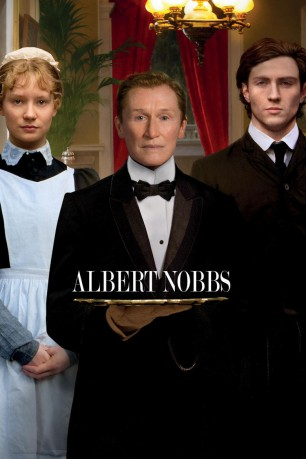

#7795 Albert Nobbs
Auszeichnungen: für 3 Oscars nominiert
 
 IMDB-Wertung: 6.7 / 10
IMDB-Wertung: 6.7 / 10  Metascore: 0
Metascore: 0 
Im Irland des 19. Jahrhunderts arbeitet der introvertierte Butler Albert Nobbs im Nobelhotel der sparsamen Mrs. Baker. Diese quartiert den Maler Hubert Page in Nobbs' Dachkammer ein - sehr zu dessen Schrecken. Denn seit Albert als 14-jährige Waise missbraucht wurde, trägt sie Männerkleider und schlägt sich als penibler, höchst zuverlässiger Diener durchs Leben. Und dann fliegt Alberts Schattenexistenz auf - wegen eines Flohs, der sich in ihr Korsett verirrt hat. Kurz darauf gibt sich auch Page als Frau zu erkennen.
Jahr: 2011
Dauer: 113 Minuten
FSK: 6
Land: England Studio: Pandastorm PicturesTonspuren: DTS - ,
Untertitel: Deutsch, Englisch,
Auflösung: 1080p (1920x816) Größe: 5099 MB
Genre: Drama, Liebe
Regisseur: Rodrigo García
Drehbuch: Gabriella Prekop
Soundtrack: Brian Byrne
Darsteller:
 Glenn Close als Albert Nobbs
Glenn Close als Albert Nobbs Antonia Campbell-Hughes als Emmy
Antonia Campbell-Hughes als Emmy Mia Wasikowska als Helen
Mia Wasikowska als Helen- Pauline Collins als Mrs. Baker
 Maria Doyle Kennedy als Mary
Maria Doyle Kennedy als Mary Mark Williams als Sean Casey
Mark Williams als Sean Casey James Greene als Patrick
James Greene als Patrick- Serena Brabazon als Mrs. Moore
 Michael McElhatton als Mr. Moore
Michael McElhatton als Mr. Moore Phyllida Law als Mrs. Cavendish
Phyllida Law als Mrs. Cavendish Brendan Gleeson als Dr. Holloran
Brendan Gleeson als Dr. Holloran Kenneth Collard als Monsieur Pigot
Kenneth Collard als Monsieur Pigot Judy Donovan als Madame Pigot
Judy Donovan als Madame Pigot Jonathan Rhys Meyers als Viscount Yarrell
Jonathan Rhys Meyers als Viscount Yarrell Phoebe Waller-Bridge als Viscountess Yarrell
Phoebe Waller-Bridge als Viscountess Yarrell Emerald Fennell als Mrs. Smythe-Willard
Emerald Fennell als Mrs. Smythe-Willard- John Light als Mr. Smythe-Willard
- Angeline Ball als Mrs. Gilligan
 Aaron Taylor-Johnson als Joe
Aaron Taylor-Johnson als Joe Brenda Fricker als Polly
Brenda Fricker als Polly- Mark Doherty als Porter
 Janet McTeer als Hubert Page
Janet McTeer als Hubert Page- Kathleen Warner Yeates als Laundry Maid
 Bronagh Gallagher als Cathleen
Bronagh Gallagher als Cathleen- Annie Starke als Chocolate Shop Waitress
- Anna Elizabeth McGrath als Laundry Maid (uncredited)
- Dolores Mullally als Milady
- Bonnie McCormack als Miss Shaw
- Daniel Costello als Mr. Sweeney
- Philip O'Sullivan als Mr. Gilligan
- Katie Long als Young Kitchen Maid
- Katie O'Brien als Older Kitchen Maid
- Rhys Burke als George Moore
- Lauren Kinsella als Milly Moore
- Katie Ann McDonough als Laundry Maid
- Cate MacGabhan als Laundry Maid
- Antoinette Healy als Woman on Landau
- Cathy White als Nanny
- Malcolm Blacow als Health Official
- Lily Melcher als Country Girl
- Lucie Melcher als Country Girl
- Raul Riva als Albert Joseph - Helen's baby
- Juno als Polly's Dog
- Una C. als Snooty Dinner Guest (uncredited)
Datei: X:\2011(A-F)\Albert Nobbs (2011, FSK6, 1920x816).mkv seit 20.12.2017
Festplatte: HD 2010(G-Z)-2011(A-F)
 Es gibt insgesamt 86 Filme in der Gruppe '2011(A-F)'
Es gibt insgesamt 86 Filme in der Gruppe '2011(A-F)'